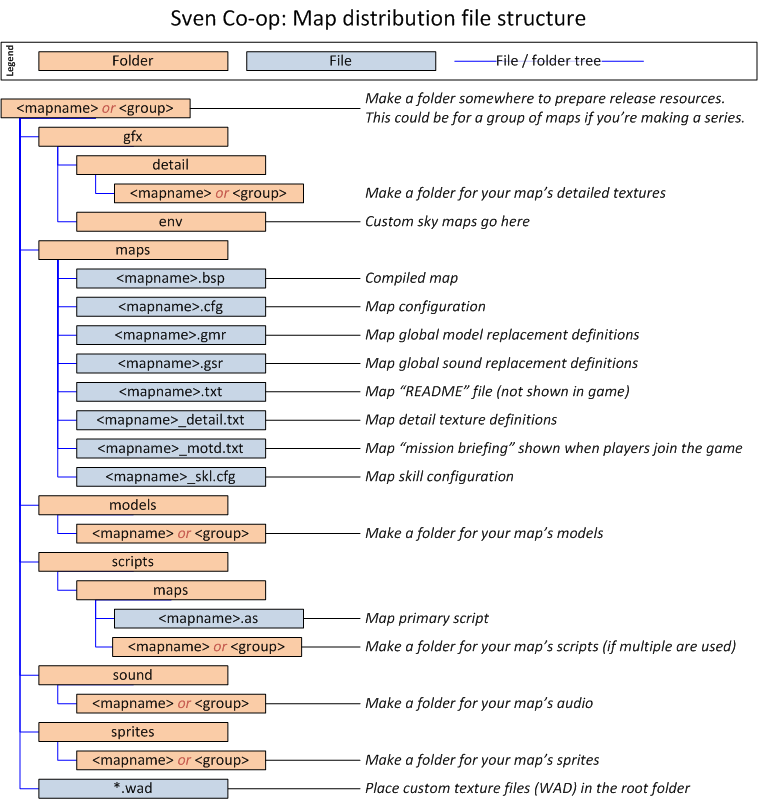
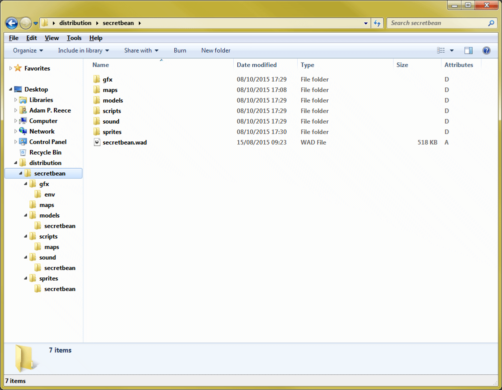

Mapping (distribution guidelines)
This section will go over some instructions on how to pack your map for distribution.
Contents
Preparation
The first thing you must to is consolidate your map and its resources into a single location. This makes packaging the map much easier, and you're less likely to miss something out.
It is very important that you follow these guidelines. Failures or common mistakes can get your map removed or barred from various websites and the Steam workshop. If in doubt please ask first at the mapping message board  .
.
 Do not create a svencoop or svencoop_addons folder. This is very important for the correct automatic placement of your map resources on installation, both manually and through the Steam workshop.
Do not create a svencoop or svencoop_addons folder. This is very important for the correct automatic placement of your map resources on installation, both manually and through the Steam workshop.- Do not include any scripts outside the maps folder. These will be treated as suspicious and could get your map banned from sharing on web sites and the Steam workshop.
 If your map only has a single BSP and perhaps a couple of TXT/CFG files you must still create the correct folder structure.
If your map only has a single BSP and perhaps a couple of TXT/CFG files you must still create the correct folder structure.
This diagram shows how your map content should be laid out in preparation for distribution.
Packing
To distribute your map you should first pack it up as a single archive file. This makes it easier to hand out and reduces its size. You can use a free utility such as 7-Zip to create an archive. This runs on both Windows and Linux and is provided for free of charge.
Graphical instructions for Windows
If you've followed the preparation instructions, you should have a folder looking a bit like this. (in this example the map name is secretbean)
- Select all of the contents of this folder then right click anything that is highlighted.
- Select 7-Zip then Add to archive... from the context menu.
- Copy the settings from the screen shot below.
- If your map is private you may want to protect the archive with a password.
- Click OK to create your archive.
You should now have a 7z file you can share.
Command line instructions for Windows and Linux
If you've followed the preparation instructions, you should have a folder looking a bit like this. (in this example the map name is secretbean)
Directory of ............\distribution\secretbean 08/10/2015 17:40 <DIR> . 08/10/2015 17:40 <DIR> .. 08/10/2015 17:40 <DIR> gfx 08/10/2015 17:40 <DIR> maps 08/10/2015 17:40 <DIR> models 08/10/2015 17:40 <DIR> scripts 08/10/2015 17:40 529,848 secretbean.wad 08/10/2015 17:40 <DIR> sound 08/10/2015 17:40 <DIR> sprites
Yes, this will look different on Linux with the ls command.
While your command prompt or terminal has its working directory set to this folder, you can create a 7z archive with this command:
7z a -t7z -mx9 <mapname>.7z *
If you want to protect your archive with a password, use this command instead. Put your password inside the quotes to ensure it's used exactly as written.
7z a -t7z -mx9 -mhe -p"Password Here" <mapname>.7z *
You should now have a 7z file you can share.
Sharing
Once you have verified your map's 7z archive is ready for distribution (including making sure you've followed all the guidelines here), you should share it on a few websites to get it out there.
- Message board: Work in progress : This message board should be used to post your map if it's still a work in progress or a non-final release (i.e. beta or release candidate).
- Message board: Map showcase : This message board should be used to post your map if it's gone passed all testing and pre-release states (beta, release candidate, etc.) and you're ready for serious reviews. As this message board is for final versions of your map you should make your post attractive, using a good description, screen shots, and maybe a video.
- Sven Co-op maps database : This community run Wiki is a great source of maps, including descriptions, file hosting, screen shots, reviews, and more. This is not an official website, so please check the rules before posting your map. They accept work in progress and completed projects.
- A Steam workshop for Sven Co-op is in progress, but will be available in a future release.
In order to get your map as available as possible you should ensure your 7z file is hosted well. Here are a few places you can host your map's 7z file for free of charge.
- DropBox : 2GB of storage for free, or 1TB of storage for pro users. Be sure to place your map within your Public folder.
- Google Drive : 15GB of storage for free, or up to 30TB for pro users. Be sure to allow public access to your map 7z files.
- Microsoft OneDrive : 15GB of storage for free, or up to 200GB of storage for pro users. 1TB available for Office 365 subscribers. Be sure to place your map within your Public folder.
- Sven Co-op maps database : You are currently allowed to upload files with your map page.
Please avoid using websites of which place users into a download queue, inflict a wait timer, or advert gateway. These will only annoy people, and someone will just re-host your map somewhere less annoying.